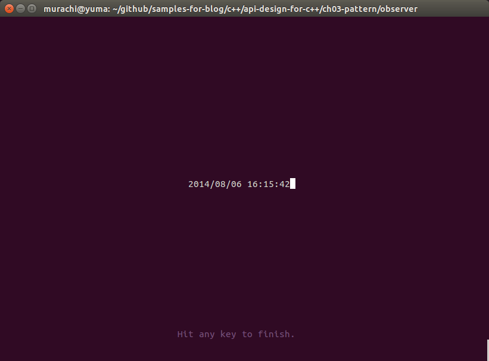
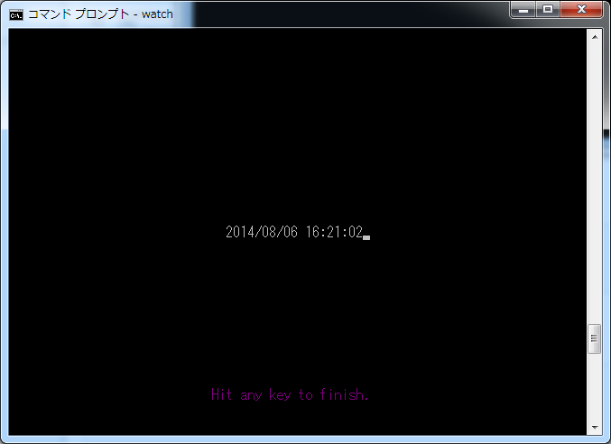

ライブラリ API の設計手法を学ぼうシリーズの第2弾です。前回の記事はこちら。以下の教材を利用しています。

さて、API のラッピングパターンについてはざっと読むだけで終了とし、今回は Observer パターンについてさらってみました。
MVC っぽいことをやってみたい。
本書では、オブザーバーパターンの説明に入る前に、 MVC アーキテクチャについての説明がありました。
シンプルなアプリケーションでは、コントローラはユーザ入力に基づいてモデルへの変更に影響を与え、こうした変更をビューに通信して、UIを更新できるようにする。しかし、実際のアプリケーションでは、通常、水面下のモデルへの追加変更を反映するために、ビューも更新する必要がある。(…中略…)とはいえ、先ほど述べたように、モデルコードはビューコードを静的にバインディングして呼び出すことはできない。そこでオブザーバーが必要になるのだ。
なるほどなるほど。とまぁ、こんな説明の後に Observer パターンの実装例とその説明に入っていくのを見せられたら、そりゃあまぁ、 MVC っぽいことをやってみたい、って普通思いますよね…??
ただ、上記にあるようにモデルがビューを監視できるようにする必要があるという話であるにもかかわらず、多くの MVC フレームワーク実装を見るに、ビューからのメッセージを受け取って何らかの制御を行うコードは通常コントローラに書かれているように見えます。現実的には、ビジネスロジックはフレームワークを差し替えても流用可能であることが望ましく、オブザーバーにするための抽象クラスの継承でさえ避けたいというのが実情なのではないかと思います。
そこで、コントローラをビューに対するオブザーバーとする設計とし、ビューが提供するいくつかのメッセージに対して、メッセージハンドラのような感じでコントローラを登録し、実装できるようにする、という考え方でやってみることにしました。ビューはよく使いそうなパターンのものを幾つか用意しておけば、あとは必要に応じてたまーに新しいものを追加する程度の変更で事足りるでしょうが、コントローラは新しい機能を追加するたびに必ず実装を追加することになります。テキスト p.120 の図にも示されている通り、ビューはコントローラの実装を知らないほうが良いのです。モデルはコントローラが掴んで (もしくは生成して)、ビューから呼び出されるハンドラメソッド内で操作するようにすればよいでしょう。
コンソール画面で動くものを作ってみる。
MVC アーキテクチャっぽいものを、といっても、具体的に何を作ろうか、というのは悩みどころです。 GUI のものを作るにしても、 Web アプリケーションを作るにしても、結構大掛かりなシステムになってしまうのではないかという不安があります。お試しで作るんですから、簡単なものがいいんですよね…。
というわけで、コンソール画面で動くものを作ることにしよう、ということでプログラムを書いてみることにしました。それも内容的にもごく簡単なものをということで、お題はズバリ、時計です。コンソール画面の真ん中らへんで、現在時刻を表示し続けるというだけの、ごくごく簡単なプログラムです。
作ってみた。
そんなわけで、作ってみました。ソースコードは以下の場所にて公開しています。
このプログラムは std::thread を使ったマルチスレッドプログラムなので、 gcc でコンパイルするときは以下のように、必ず -pthread オプションを付けてあげて下さい。
$ g++ -std=c++11 -pthread -o watch *.cpp $ ./watch
プログラムを実行すると、コンソール画面がクリアーされて、画面の真ん中らへんに現在日時がリアルタイムで表示されます。また、画面の下の方に「Hit any key to finish.」と表示されるとおり、なにか適当なキーを押すとプログラムは終了します。


なお、動作確認は以下の環境にて行いました。
{kind=link}
{kind=link}
- Ubuntu Linux 14.04 LTS x86_64/GCC 4.8.2/bash 4.3.11/kernel 3.13.0
- Windows7 Professional SP1 x86_64/Mingw_w64 GCC 4.8.2 (powerd by Win-builds)/コマンドプロンプト
プログラムの解説など。
モデル
日時の保持と現在日時への更新、といった辺りをビジネスロジックとして実装しています。 datetime.h と datetime.cpp がそれです。
ここはまぁ、日時の取り扱いに Boost.DateTime を使っているという点以外は特筆すべき点も無いんじゃないかと思います。
ビュー
コンソール上で動作するビュー全般、ということで console-view.h と console-view.cpp 、より具体的に静的に文字列を表示するだけのビューということで static-text.h と static-text.cpp を、そしてキー入力を待ち受けるためのビューとして key-listener.h と keylistener.cpp を実装しました。また、ビューはオブザーバーを登録して通知を投げるサブジェクトとして実装しています (subject.h 、 subject.cpp)。
class SubjectBase : private boost::noncopyable {
// ...
};
class ConsoleView : public SubjectBase {
// ...
};
class StaticText : public ConsoleView {
// ...
};
class KeyListener : public ConsoleView {
// ...
};
SubjectBase クラスについては、これはもう概ね教科書どおりの実装です。 subscribe() メソッドにてメッセージ ID を指定しつつ observer を登録し、何らかのイベントに応じて、そのイベントに対応するメッセージ ID に指定登録されたすべてのオブザーバーに通知を投げる、ということができる仕組みになっています。派生クラスは自身の notifyObserver() メソッドを呼べば、 observer として登録されているコントローラを呼び出すことができるというわけです。
なお、オブザーバーの登録・削除はスレッドセーフになるよう、 Mutex を使ってロックをかけています。オブザーバーへの通知の際にもロックをかけていますが、通知対象となるオブザーバーの配列をコピーするまででロックを解除し、コピーを見て通知を行うようにしています (通知の実行までロックした状態でやるとデッドロックを起こすことがあったので…^^;)。
ConsoleView クラスはコンソール上で動作するビューとしての一通りの機能を持つクラス… であるべきなのですが、考えられるすべての機能を盛り込みまくる動機付けもなかったので、とりあえず以下の機能だけ実装しました。
- 以下のステータスの保持と、それに基づく表示
- 表示文字列
- 表示位置 (コンソール座標)
- 色番号 (0～7)
- 上記のステータスを変更すると、それに応じて表示を更新する
- タイマー、およびインターバルタイマー
- コンソール画面のサイズの取得
ステータスの変更は setStatus() メソッドにて行います。ステータスを変更すると即座に表示に反映される、ようにしたかったのですが、例えばテキストも表示位置も色も変更するよ、という場合に、それぞれの値を個別に受け取るようにメソッドを分けてしまうと、一度の変更で再描画が最大 3回も走ってしまう、というのでは激しくダサいなと思ったので、現在のステータスを構造体として受け取って、その内容を書き換えるコールバック関数を受け取るようにしてあります。このコールバック関数は std::function として受け取るようにしてあるので、キャプチャ付きのラムダを指定することも可能です (こちらの記事でやろうとしていたやつですね^^;)。
タイマーとインターバルタイマーは、それぞれ setTimer() と setInterval() 各メソッドを呼ぶことで発動します。どちらも指定した時間が来ると vm_Timer メッセージの通知を observer に投げます。インターバルタイマーの方はこれを stopInterval() を呼ぶまで何度でも繰り返します。今回のプログラムではインターバルタイマーの方だけ使っています。
StaticText クラスはコンソール上の固定の位置に、指定した色で指定したテキストをただ表示するだけのビューとして実装しました。 changeText() メソッドを使うことで、表示するテキストの内容だけ変更することができるようになっています。もっとも、ConsoleView::setStatus() メソッドが public なので、やろうと思えば表示位置や色も変更できてしまうのですが…。
KeyListener クラスは、キー入力を待ち受けし、入力値を取得することができる入力用のビューです。あまりコメントを尽くしていないのでわかりにくいのですが、 initialize() メソッドをオーバーライドしており、オブザーバーに初期化メッセージを投げる前に、この中でキー待受を行うスレッドを生成します。このスレッドがキーの入力を取得すると、今度はオブザーバーにそのことを伝えるメッセージを投げ、オブザーバー側で getKeyChar() メソッドを呼んで入力値を得ることができるようになっています。
コンソールマネージャ
コンソール制御は複数存在しうるビューとは切り離して実装する必要があると判断し、コンソールマネージャとして別途実装しています (console-manager.h 、 console-manager.cpp)。内容的にはシングルトンにしたいところなのですが、今回はビューに対して依存性を注入することを前提とした設計ということにしてみました (main() 関数の中で 1つだけインスタンスを生成するイメージ)。
実際に実装した機能は以下のとおりです。
- インスタンス生成時に画面をクリアする。
- インスタンス破棄時にカーソルの現在の文字の色を元に戻す (Windows では白で決め打ちにしちゃってます…)。
- コンソール画面のサイズの取得 (
getSize())。 - 指定したカーソル位置及び色でコンソールに文字列を出力する (
output())。 - エコーバックせずにキー入力を受け付ける (
waitKeyInput())。
ConsoleView クラスやその派生クラスが提供する機能の具体的な実装は全てここにあります。
最後の waitKeyInput() は、要するに DOS の getch() 関数です (実際、 Windows では _getch() 関数を呼んでいます)。当然ブロックします (なので、 KeyListener クラスはスレッドを咬ましてこいつを呼びに行っています)。
コントローラ
時計のリアルタイム表示処理を行うコントローラとして watch-controller.h と watch-controller.cpp 、キーが入力されるまでプログラムを実行させ続けるためのコントローラとして wait-controller.h と wait-controller.cpp を実装しました。これらはサブジェクトであるビューから通知を受け取るオブザーバーとして実装しています (observer.h)。
class ObserverBase : private boost::noncopyable {
public:
virtual ~ObserverBase() = default;
virtual void notify(int message) = 0;
};
class WatchController : public ObserverBase {
// ...
};
class WaitController : public ObserverBase {
// ...
};
ObserverBase クラスも SubjectBase クラスと同様、教科書通りの実装となっております。通知を受け取る純粋仮想関数 notify() があるだけの簡単なインタフェースです。
WatchController クラスは時計のリアルタイム表示処理を行います。コンストラクタに StaticText インスタンスの参照を受け取り、コンストラクタの中で初期化メッセージとインターバルタイマメッセージ用に自身を登録します。で、初期化メッセージを受け取ったタイミングで StaticText のインターバルタイマ (これは ConsoleView から継承されている機能ですね) を開始し、インターバルタイマメッセージを受け取ったタイミングで、自身がメンバに持つ DateTime オブジェクトの現在時刻更新を行いつつ、 StaticText の表示に反映させる、という仕組みです。
WaitController クラスはキー入力を受け取るまでひたすら待ち続けるという処理を行います。 WatchController だけだと、 インスタンスを生成したはいいけど main 関数が処理から抜けてしまってプログラムがあっという間に終わっちゃうという物悲しい現象が起こってしまうので、何もしないでただ待つだけのスレッドを用意してそれに同期 (join) することで main 関数から抜けないようにして上げる必要があり、その役目を果たすのがこのクラスというわけです。
作りは WatchController に割と似通っていまして、まずコンストラクタに KeyListener インスタンスの参照を受け取り、コンストラクタの中で初期化メッセージとキー入力メッセージ用に自身を登録します。で、初期化メッセージを受け取ったタイミングでコンソールに「Hit any key to finish.」などと表示しつつ、フラグが立つまでひたすら待ち続けるだけのスレッドを作って join します (このため、 KeyListener::initialize() メソッドの呼び出し元がブロックされる)。その直前に KeyListener が生成していたキー入力待ち受けスレッドがキー入力を受け付け、そのメッセージをこのコントローラに投げると、そこで先ほど処理をブロックするためだけに作ったスレッドを終了させるフラグを立て、めでたくブロックされていた処理が開通する、という仕組みです。
両方のコントローラで共通する話なのですが、ビューへのオブザーバー登録はどちらもオブザーバーであるコントローラのコンストラクタの中で行っています。 WatchController での記述を以下に示しますが、
WatchController::WatchController(StaticText & text_view)
: impl{new WatchController::Impl{text_view}}
{
text_view.subscribe(ConsoleView::vm_Init,
std::shared_ptr<ObserverBase>{this, [](ObserverBase *){}});
text_view.subscribe(ConsoleView::vm_Timer,
std::shared_ptr<ObserverBase>{this, [](ObserverBase *){}});
}
std::shared_ptr のコンストラクタの第2引数に何もしないラムダを渡すというなんだか気持ちの悪いことをやっていますよね。何でこんなことをやっているのか。サブジェクト側ではオブザーバーインスタンスを shared_ptr でメモリー管理していますが、これはサブジェクトがどのように生成されるかわからないという前提では妥当な設計だと思うのですが、その一方で実際に登録を行うときに、これをオブザーバーのコンストラクタの中でやってしまおう、そうした方がなんだかスマートに書けそうだという場合に、 this ポインタをそのまま shared_ptr に包んでしまうのは非常に危険です。なぜならそのオブザーバーインスタンスはどのように生成されるかわからないし、生成した側がどのような形で管理するかもわからないので、例えばスタック変数として生成した場合や、生成した側でも unique_ptr や shared_ptr に包んで適切に破棄しようとしていた場合には、どちらかの破棄のタイミングで例外が送出される (おそらくは、アプリケーションエラーになる) ことになってしまいます。そうならないように、何もしない deleter を shared_ptr に渡し、 delete が呼ばれるのを防いでいるわけです。メモリーの管理責任の所在については色々と議論もあるでしょうが、私はインスタンスの生成を行った側が、そのインスタンスの破棄についても責任をもつべきだと考えています。
main関数
main関数はわかりやすいように main.cpp ファイルに記述しました。まず ConsoleManager インスタンスを生成し、次に日時の表示を行うビュー StaticText とコントローラ WatchController を生成して、ビューの initialize() メソッドを呼ぶ。同様にキー入力待受を行うビュー KeyListener とコントローラ WaitController を生成して、同じくビューの initialize() メソッドを呼ぶ。ただこれだけです。これだけで何でよしなに動いてくれるのか、といった辺りは、ここまでで色々と説明したとおりです… (分かんないかなぁ^^;)。
作ってみた感想など
前回 Pimpl をさらった時に、テキストに示されていた以外にプラットフォーム依存のコードを各状況というのがなかなか思いつかなくて try 出来なかったのですが、今回 ConsoleManager という形で #ifdef 書きまくることが出来たのはちょっと幸運でした。こういうのは自分で書いてみないと、他人が書いたコードを読むだけではなんだかビビってしまうばかりなので… プラットフォームごとに違うことをやるようなコードを書いて、どっちのプラットフォームでも動くのを確認するのはなかなか爽快ですよ。
KeyListener みたいな仕組みは、本当はビューではなく全く別の枠組みで用意すべきだったのかもしれません。 Windows のメッセージループみたいに書けるのが本当は理想的… なのかなぁ?? (よくわからん)
Windows の方は実際一応動くのですが、キー入力時に時々よく分からんエラーを吐いて終わることがあります (2014/8/6 時点)。何かがツメが甘いのかも…。
より MVC フレームワークチックにやりたいということであれば、他にも色々と改良の余地はあるんじゃないかと思います。埋め込みリソースからビューを生成とか…。
こちらからは以上です。
2014 年 8 月 6 日 by 村山 俊之